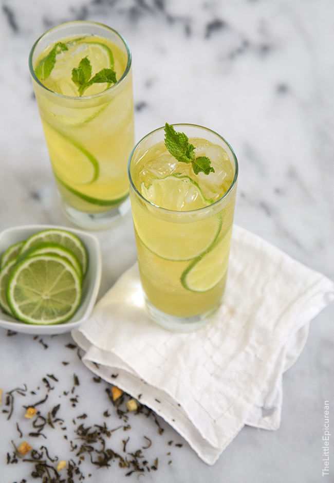

How to Brew Green Tea | Eat This Not That
 Toggle navigation Weight Loss Healthy Eating Recipes Restaurants Groceries ETNT Health Food & Nutrition News The Books The Magazine The Podcast The Game The Newsletter Skip to content Weight LossHow to Make the Perfect Cup of Green Tea for Weight Loss
Much like the classic Mint Julep enjoyed once a year at the Kentucky Derby, most of us are guilty of only reaching for green tea when we re at a Japanese restaurant. By Cecelia Smith November 24, 2015But with a gold-standard reputation and laundry list of health benefits, this is one drink that deserves a spot in your pantry and your daily diet. Study after study continues to affirm the elixir's tea-rrifically healthy reputation, underscoring its ability to reduce your blood sugar, your risk of numerous diseases and your belly fat . In fact, Polish researchers recently discovered green tea's profound ability to limit the amount of starch absorbed from a meal — making it a potentially powerful treatment for diabetes and obesity.
So if you're a regular sipper (or ready to become one), you should know how to make the cup that's going to get you the best nutritional bang for your brew. Here are ten tips to turn your drink into the healthiest cup of green tea on the planet. And lose up 10 10 pounds—fast—on THE 17-DAY GREEN TEA DIET , developed by the bestselling authors of Eat This, Not That!
1Don't Buy Bottles
ShutterstockAs is the case with most ingredients, the more processed the tea, the lower its nutrition content. In fact, canned and bottled varieties of green tea are typically little more than sugary water, researchers say. One study that looked at 14 different brands of the bottled stuff found total content of EGCG — the most abundant antioxidant in green tea — to be lower than 3 mg per 100 millimeters in ten of them. In fact, another report published by ConsumerLab.com found one variety, Diet Snapple Green Tea, contained almost no EGCG whatsoever.
2Brew a Bag
ShutterstockTea purists will turn up their noses at tea bags, but the rule is out as to whether a loose leaf brew is superior from both a health and cost perspective. Green tea brewed from loose tea leaves did, in fact, contain the most antioxidants though cheap-and-cheerful tea bags were almost as potent and much more affordable, a report published by ConsumerLab.com found. And another study found the difference in antioxidant capacity between loose leaf and tea bag preparations to be insignificant. So unless you're a purist (or having tea with one), we say a teabag is your best brew bet.
3Trust Tea from Tokyo
Many of green tea's health accolades can be attributed to catechins — a class of potent antioxidants found in tea leaves. While Chinese green tea that's dry-heated contains slightly more catechins than steamed Japanese tea, it's also more likely to be contaminated with lead, researchers say. If you're not sure where your tea comes from, researchers suggest sticking to tea bags. The lead doesn't appear to leach out in the brewing process, so you only have to be wary of eating the leaves, which are effectively filtered out when you brew a bag.
4Simmer Down
Green tea antioxidants like it hot. But not too hot. One study in the Journal of Food Composition and Analysis found optimal brewing conditions for resulting antioxidant content to be 80 degrees Celsius for 3 to 5 minutes. Another study from the International Journal of Food Sciences and Nutrition suggests a brew temp and time of 90 degrees for at least 2 minutes. Compared to cooler infusions (ranging from 20 to 100 degrees), researchers found increasing water temperature could increase the antioxidant potential by as much as 9.5 fold. All things considered, the takeaway tip is this: steep a tea bag for at least two minutes in hot water that's just shy of boiling. 5
Reach for Lemon
ShutterstockThose lemon wedges aren't simply a garnish; they make sure green tea's catechins can do their job of boosting your total health . Unfortunately, the disease-fighting compounds are relatively unstable in non-acidic environments like the intestines. In fact, less than 20 percent of tea's catechins remains after digestion, according to researchers. But a recent Purdue University study found a simple solution: a squeeze of vitamin C-rich citrus juice significantly helped recover antioxidant levels. Lemon juice, which maintained an impressive 80 percent of tea's catechins, is your best pick.
6Use a Touch of Honey
Add a drizzle of honey to your morning cuppa if you have a lengthy to-do list. Participants who sipped a caffeinated beverage with sugar—combining caffeine and glucose—showed increased activity in the areas of the brain associated with attention, a study published in the journal Human Psychopharmacology: Clinical and Experimental found.
7Zap It
ShutterstockThe morning got away from you, and there's a half-drunk mug of cold tea on your desk. Resist the urge to dump it for a new bag, and give your tepid tea a zap in the microwave instead. Research has shown that heating a brewed cup of tea in the microwave for one minute can increase its catechin availability by nearly 20 percent.
8Skip the Milk
ShutterstockIt's customary to serve tea with milk in many parts of the world. But researchers say a drop of milk (skim, whole and even dairy alternatives) may strip tea of its heart-healthy benefits — an unfortunate consequence of milk proteins binding with tea's protective flavonoids and limiting their absorption. One study published in European Journal of Clinical Nutrition found adding whole milk "totally inhibited" the antioxidant effect of tea in the body. Another study showed similar results: adding skim milk to tea negated otherwise improved blood vessel function.
9Don't Stock Up
ShutterstockCoupon queens be warned: tea is not the best item to buy in bulk . Heat, sunlight and humidity can all affect the antioxidant capacity of tea; and it happens rather quickly, according to researchers. One study looked at the stability of catechins in tea bags stored in dark rooms at 68 degrees F over different lengths of time. Researchers found at least some drop-off in antioxidant content within a few weeks, and an average drop of 32 percent after six months. Green tea powders like matcha were particularly susceptible to degradation, another study found. Other than resisting the urge to stock the pantry during a good sale, researchers suggest storing tea in an opaque canister in a cool, dark place, or even in the a refrigerator for the best result.
10Pick Your Cup Wisely
Throw out your plastic thermos, and avoid those plastic-coated and styrofoam cups in the office. Researchers say the amount of dangerous bisphenol A ( BPA ) that leaches from plastic drink containers is most dependent on the liquid's temperature — which could turn your hot cup of tea into a hot cup of toxins. BPA is a man-made chemical and classified hormone disruptor found in plastics that has been linked to all sorts of negative health effects. Pouring boiling water into plastic drinking containers caused the chemical to leach into the fluid 15 to 55 times faster than cool or temperate water, one study published in the journal Toxicology Letters found. Do your health a favor, and treat yourself to a nice big porcelain mug and a BPA-free tea traveler.
Read This Next
Weight Loss20 Habits Skinny People Live By
Tried-and-true habits to help you shed weight.
Weight Loss12 Hunger-Squashing Snacks
Stay full and energized throughout the day.
Weight Loss8 Ways to Eat Carbs and Still Lose Weight
You can still carb up and slim down!
Weight LossThis Is Why You're Not Losing Belly Fat
It might not be exactly what you're thinking.
Weight Loss40 Bad Habits That Give You Belly Fat
These seemingly harmless habits can hold you back.
Weight Loss10 Things To Help You Lose Weight
It's all about changing your mindset.
Weight LossThe #1 Worst Drink For Weight Loss
Cut calories and improve your health in the process.
Weight Loss7 Common Diet Foods Making You Gain Weight
These "healthy" foods are actually terrible for you.
More in Weight LossThis Is Why You re Not Losing Belly Fat
40 Bad Habits That Give You Belly Fat
10 Things To Help You Lose Weight
The #1 Worst Drink For Weight Loss
7 Common Diet Foods Making You Gain Weight
Facebook Twitter Instagram Pinterest About Us Our Advisory Board Subscribe Newsletters Partner Sites Privacy Policy Terms and Conditions Advertise FAQ Contact UsSubscribe to our daily newsletter
Get the best food tips and diet advice every day.© 2020 Galvanized Media. All Rights Reserved. EatThis.com is part of the AllRecipes Food Group